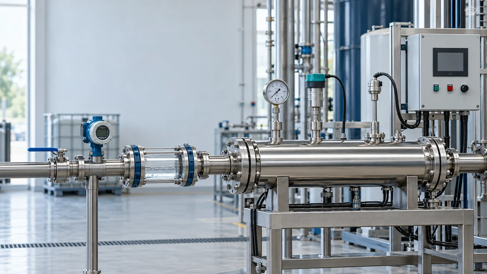
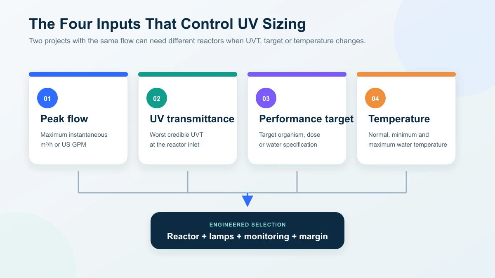
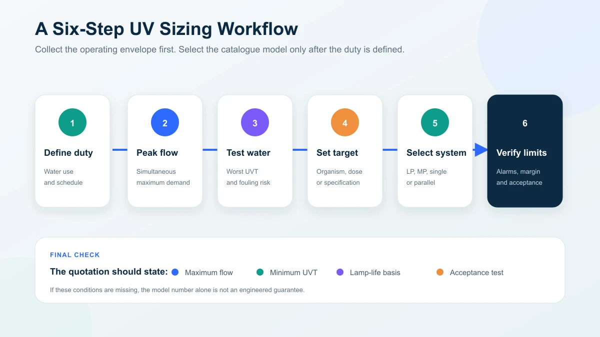

How to Size a UV Water Treatment System: A Step-by-Step Buyer’s Guide
The four sizing inputs, UVT and end-of-lamp-life logic, LP versus MP selection and the RFQ data that turns a quote into an engineered proposal
Ask an Engineering Question ↗
The four inputs that control UV sizing
A UV reactor is sized from four core inputs: peak flow, UV transmittance (UVT), required performance and water temperature. Two sites with the same flow can need different reactors when UVT or targets differ, so selecting from pipe size or catalogue flow alone is risky. Performance must hold at end of lamp life and worst-case UVT, not day-one conditions. This guide walks the four inputs, the LP-versus-MP decision, single versus parallel architecture and the data package for an engineered quotation.
On this page
- The four inputs that control UV sizing
- What is UVT and why does it change the system size?
- How should the required UV performance be defined?
- Low-pressure or medium-pressure UV?
- A practical sizing workflow
- One reactor or several?
- Undersizing and oversizing risks
- Monitoring and control requirements
- What should you send with an RFQ?
- How should quotations be compared?
- Frequently asked questions
- Request an engineered UV selection
The four inputs that control UV sizing
| Input | What to provide | Why it matters |
|---|---|---|
| Peak flow | Maximum instantaneous flow in m³/h or US GPM | Higher flow reduces exposure in a given reactor and may require more lamp output or a larger chamber |
| UV transmittance | Measured UVT at the relevant wavelength and worst expected water condition | Low UVT absorbs light before it reaches the target organisms |
| Required performance | Target organism, required reduction or dose, and the applicable standard | Defines the treatment objective and validation basis |
| Water temperature | Normal, minimum and maximum operating temperature | Affects lamp output, cooling and material selection |
These inputs should be supported by operating data rather than optimistic assumptions. Size to the maximum flow the reactor can actually receive and the lowest credible UVT, not the annual average.

Why peak flow matters
UV performance depends on the light field and the time water spends inside the reactor. As flow through the same chamber rises, exposure falls unless the system increases output or uses a different reactor arrangement.
The supplier should therefore specify:
- maximum validated or rated flow;
- any permitted turndown range;
- response to flow above the design limit;
- whether flow is measured, limited or alarmed;
- which pumps, valves or production sequences create the peak.
Average flow is useful for energy and operating-cost estimates, but it cannot replace peak flow for disinfection sizing.
GPM-to-m³/h reference
| m³/h | Approx. US GPM |
|---|---|
| 0.5 | 2.2 |
| 1 | 4.4 |
| 2 | 8.8 |
| 5 | 22 |
| 10 | 44 |
| 20 | 88 |
| 50 | 220 |
Conversion: 1 m³/h ≈ 4.403 US GPM.
Always convert the maximum simultaneous demand, not the average daily volume.
What is UVT and why does it change the system size?
UVT describes how much UV light passes through a defined path length of water. Dissolved organics, color, iron, turbidity and suspended solids can reduce transmission or shield microorganisms.
A complete sizing review should include:
- UVT measured at the relevant wavelength;
- turbidity and suspended solids;
- iron and manganese;
- hardness, alkalinity and pH, which influence sleeve fouling;
- seasonal source-water changes;
- upstream chemicals that may absorb UV or deposit on the sleeve.
Use the lowest representative UVT for the design condition. A dry-season sample may not describe surface water during a rainy-season event. If the water quality varies widely, the better solution may be improved pretreatment rather than a larger lamp.
How should the required UV performance be defined?
Do not choose a dose number without its application context. The target should come from the applicable regulation, water specification, organism of concern or validated process requirement.
A purchase specification should identify:
- target organism or performance objective;
- required reduction or dose basis;
- design UVT and flow range;
- lamp-aging and sleeve-fouling assumptions;
- validation method or supplier performance basis;
- monitoring parameters and alarm limits.
EPA UV guidance emphasizes validated operating conditions and explicitly accounts for lamp aging, sleeve fouling and sensor-window fouling. That is a better purchasing framework than calculating dose from lamp wattage and nominal contact time alone.
End-of-lamp-life performance
Lamp output declines with operating hours, starts, temperature and duty. A system that meets the target only with new lamps and clean sleeves is not adequately specified.
Ask the supplier whether the performance claim is based on:
- new-lamp or end-of-lamp-life output;
- clean or fouled-sleeve allowance;
- measured UVT or an assumed value;
- a validated reactor or an internal engineering calculation;
- all lamps operating, including the response to one-lamp failure.
Visible lamp glow is not proof that the required UV output is being delivered.
Low-pressure or medium-pressure UV?
The correct lamp technology depends on the complete duty, not one flow threshold.
| Selection factor | Low-pressure (LP) UV | Medium-pressure (MP) UV |
|---|---|---|
| Spectrum | Concentrated around 254 nm | Broad spectrum, typically 200–400 nm |
| Power | Commonly tens to hundreds of watts per lamp | Commonly kilowatts per lamp |
| Electrical efficiency | High for many routine water duties | Lower electrical efficiency but high output per lamp |
| Lamp count | May require multiple lamps or reactors as flow rises | Fewer high-output lamps at larger duties |
| Temperature sensitivity | Output can be more sensitive to operating temperature, depending on lamp type | Often better suited to variable-temperature or compact high-output duties |
| Typical fit | Small and medium steady duties where energy efficiency matters | Large, peak-heavy or space-constrained duties |
Review the current low-pressure UV sterilizer and medium-pressure UV system ranges, but do not select from the published flow band without confirming UVT and target performance.
A practical sizing workflow

Step 1: Define the duty point
State exactly what water the reactor protects: ingredient water, building supply, process rinse, tank circulation, reuse water or another stream. Record whether the duty is continuous, intermittent or batch-based.
Step 2: Determine maximum simultaneous flow
Use a flow study, equipment schedule or pump curve. For several users on one header, confirm which can operate together. If production scheduling is used to limit demand, document and control that limit.
Step 3: Test the water at the worst expected condition
Provide UVT and fouling-related chemistry. Use seasonal data where the source changes. Samples should represent the water at the intended reactor inlet after upstream treatment.
Step 4: Define the performance target
Identify the applicable standard, target organism or water-quality requirement. Do not assume that a general “99.99%” claim applies to every organism and operating condition.
Step 5: Select the reactor and architecture
The supplier maps the design flow, UVT and required performance to a reactor, lamp type and monitoring package. At this point, compare one large reactor with parallel smaller units if uptime, maintenance or turndown matters.
Step 6: Verify the operating envelope
The proposal should state maximum flow, minimum UVT, temperature range, pressure, lamp condition, alarm setpoints and the acceptance-test method.
One reactor or several?
A single reactor is simple and may be appropriate for steady duties that can tolerate planned service. Parallel units may be better when:
- the process cannot stop for lamp or sleeve maintenance;
- demand varies widely and staged operation can save energy;
- N+1 redundancy is required;
- the header exceeds the practical capacity of one reactor.
Parallel equipment adds valves, instruments, controls, footprint and consumables. Require the supplier to describe how flow will be balanced and how the system behaves when one unit is unavailable.
Do not use a storage tank merely to hide an undersized reactor without evaluating tank hygiene, turnover and recontamination risk.
Undersizing and oversizing risks
An undersized system may operate normally while delivering insufficient treatment at peak flow or low UVT. This is a silent performance failure unless flow and UV output are monitored.
An oversized system increases capital and energy cost and may operate outside the preferred range of its lamp or control system. Buying excessive nameplate power is not a substitute for validation and monitoring.
The goal is a reactor that meets the target throughout the stated operating envelope with a reasonable margin and a documented maintenance plan.
Monitoring and control requirements
Depending on the application and validation basis, specify:
- lamp status and accumulated run hours;
- UV-intensity or validated-dose monitoring;
- flow measurement or high-flow alarm;
- low-UV alarm and automatic diversion or shutdown logic;
- temperature and overtemperature protection;
- start/stop count where lamp cycling affects life;
- remote signals, data logging and event history;
- sensor verification and calibration requirements.
EPA guidance notes that sleeve fouling, sleeve aging, lamp aging and sensor-window fouling all affect long-term performance. Monitoring converts these otherwise silent changes into actionable maintenance information.
What should you send with an RFQ?
| Information | Source |
|---|---|
| Application and intended water use | Process description |
| Normal and peak flow | Flow study, pump data or equipment schedule |
| UVT and full water report | Representative laboratory analysis |
| Required performance | Regulation, water specification or organism target |
| Temperature and pressure range | Process data |
| Upstream and downstream process | P&ID or treatment description |
| Pipe size, connections and orientation | Site survey |
| Electrical supply and control interface | Electrical specification |
| Monitoring and validation requirements | Quality or engineering specification |
| Redundancy and permitted downtime | Operations requirement |
| Site location and schedule | Project plan |
Sending the same data to each supplier is essential for a fair technical and commercial comparison.
How should quotations be compared?
| Comparison item | What to check |
|---|---|
| Design basis | Peak flow, minimum UVT, temperature and pressure |
| Performance | Dose or reduction basis and applicable organism/standard |
| Aging and fouling | End-of-life and sleeve-fouling allowances |
| Reactor construction | Materials, pressure rating, connections and drainability |
| Monitoring | Sensors, alarms, data logging and interlocks |
| Serviceability | Lamp/sleeve removal space and maintenance downtime |
| Operating cost | Connected power, lamp count, lamp price and expected life |
| Acceptance | Commissioning tests, documentation and performance verification |
| Support | Warranty, consumable lead time, training and response arrangements |
Can I size a UV system from flow alone?
No. Flow must be evaluated with UVT, required performance, temperature and long-term lamp/sleeve condition.
Does higher flow reduce UV performance?
In a fixed reactor, higher flow generally reduces exposure. The system must be selected and operated within its stated flow range, with suitable alarms or control where that range could be exceeded.
Should I always choose medium-pressure UV for high flow?
Not automatically. Compare energy, lamp count, footprint, water temperature, turndown, validation and maintenance. Multiple LP units may be suitable in some cases; MP may be better in others.
How often should UV lamps be replaced?
Follow the lamp and reactor manufacturer’s rated life and the monitored intensity trend. Operating hours, on/off cycles, cooling and water temperature can all affect actual service life.
Is TOC reduction sized the same way as disinfection?
No. A 185 nm TOC reactor is selected from feed and target TOC, flow, water matrix and loop conditions. See the TOC UV degradation system guide.
Request an engineered UV selection
Send your peak flow, UVT and water report, required performance, temperature, pressure and installation details. KONCHE can then compare LP, MP and parallel configurations and state the conditions behind the selection: request a quotation.
Technical note: Published flow bands and lamp-life figures are product references, not stand-alone performance guarantees. Final selection must be tied to the actual water quality, operating envelope and acceptance requirements.
Size from evidence,
not assumptions.
Send peak flow, UVT and water report, required performance, temperature and installation details. KONCHE will state the design basis — flow, UVT, lamp condition and acceptance method — behind the recommended UV configuration.